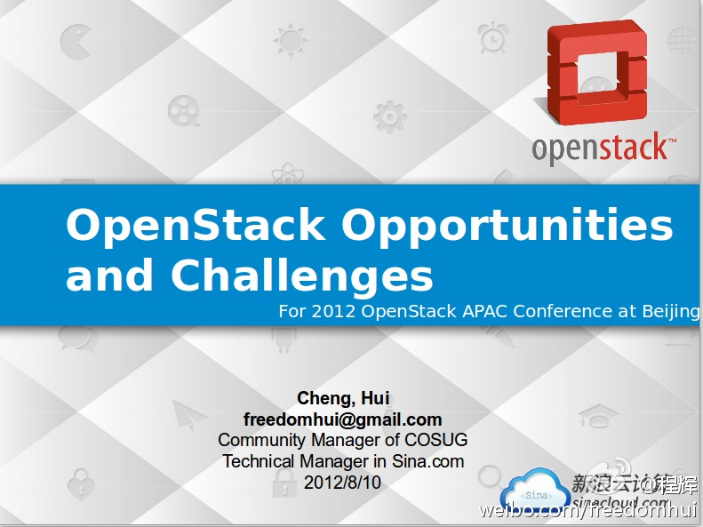
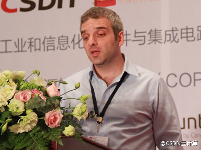

演讲内容经速记员记录，昨天已同步发布。网页链接@程辉:今天上午2012 OpenStack大会keynote分享：网页链接 ，第一次非技术分享，讲了很多关于OpenStack的观点，重点在第一部分。不过，ppt比较简单，要想了解全貌，还是要等视频发布。 
@CSDN @CSDN云计算 @CSDN打杂小工 听到这样的反馈，是不是辛苦也值得了？[呵呵]@夏明武:今天去参加2012OpenStack亚太技术大会，上午9点开始，到下午6点结束。各位大牛讲得都很精彩，就是信息量太大，听着真累。CSDN的组织很成功，这也离不开CSDN员工的辛苦和努力。
#openstack#大会Boris在“How to Make Money on OpenStack”演讲中，列出了资金最大的四家开源基金会，分别是Linux, OpenStack, Mozilla, Apache. 看起来，基金会资金多少与参与基金会的公司大小关系颇大。
成也萧何，败也萧何。日本的科研成就很高，日本参与开源力度很大，有一些原因是日本翻译很发达，不用经过痛苦的英语学习，日本人可以学习和了解新技术，保持先进水平。但另一方面，日本人的英语发音较难懂，因为英文单词在日语中是用片假名表示，类似与我们用“爸死”标注“bus”. [呵呵]
Salvatore的演讲一听就是有实践做支撑的，他在LinkedIn的自我介绍上宣称 ： 我是一个开发者，并且想一直做开发者。 解决问题是我的毒药，问题越复杂，干劲越足。 我喜欢网络，特别是当他们是虚拟的。 我是个话痨。@CSDN云计算:#OpenStack#Nicira的资深工程师Salvatore Orlando为大家带来了题为《virtual networking for OpenStack》的演讲，为大家带来一场OpenStack Quantum网络虚拟化的技术盛宴。 
大公司行动迟缓//@dingdingmumu的微博: 云服务开始就有比喻，说利用云服务，跟银行业刚实现时把钱存放到银行一样。尽管最初观念转换时需要时间，最后还是会普及。可是几年过去了，大公司的重要系统还是inhouse。银行都分流出了商业银行和投行，给客人更多的回报，可是云服务的benefit还需新的突破啊。@Ada李力:#openstack#大会，来自韩国电信的Jaesuk Ahn提到，作为韩国云计算服务提供者，目前面临问题的不是如何卖服务，而是向用户说明云服务是什么以及如何用。云计算落地还是有一段路要走。
他们这个产品底层曾采用OpenSolaris ZFS技术。刚在中国开分公司，正在招聘工程师。@Pongo庞果网 网页链接 关注下？---:该账号因被投诉违反《微博社区公约》的相关规定，现已无法查看。查看帮助 网页链接
 网页链接
网页链接